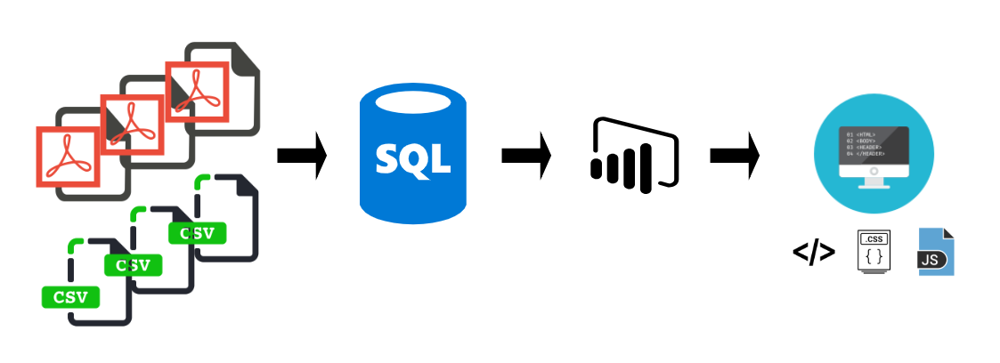

Trello
- Brainstorming
- Scrum/Kanban (uppgifter & process)
Datakällor
- SMHI - medeltemperatur, nederbörd och vind
- Fokus på perioden maj-sept, 2016-2018
- PTS statistikportal - Bredbandstäckning
Olika datakvalitet
- Bredband - fokus på hög hastighet och stabil anslutning: 1GB/s eller fiber
- Medeltemp och nederbörd - gemensamma stationer med null
- Vind - för stor andel null-värden (Utesluten pga. dålig data)
Inläsning/Transformering
- PDF-konvertering i Power BI
- Övriga tabeller: Månadsnummer (sortering), Län och Kommun.
- Mest transformering i Power BI, ex:
- Datatyper
- Delade/konkatenerade kolumner
- Index/nycklar
- Samlade data i SQL - arbeta från samma dataset
- Bättre för Unicorn AB i framtiden
- Skapat hemsida - HTML, CSS och JS
- Iframe Power BI
